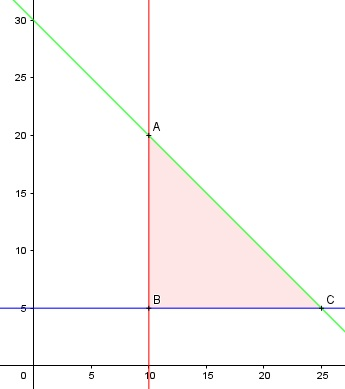

Aufgabe 69 Ein Landwirt baut auf einer Fläche von maximal 30 ha Weizen und Kartoffeln an. Er will auf mindestens 10 ha Weizen und auf 5 ha Kartoffeln anbauen. Zeichnen Sie das Planungsgebiet. x = Anzahl ha Weizen y = Anzahl ha Kartoffeln Bedingungen: 1. x ≥ 10 x ∈ ℕ 2. y ≥ 5 y ∈ ℕ 3. x + y ≤ 30

Die Eckpunkte A, B und C bilden das Planungsgebiet, das alle Ungleichungen erfüllt. Eckpunkt A: Randgerade 1. geschnitten mit Randgerade 3. 10 + y = 30 |-10 y = 20 (10|20) Eckpunkt B: Randgerade 2. geschnitten mit Randgerade 3. B(10|5) Eckpunkt C: Randgerade 1. geschnitten mit Randgerade 3. x + 5 = 30 |-5 x = 25 C(25|5)